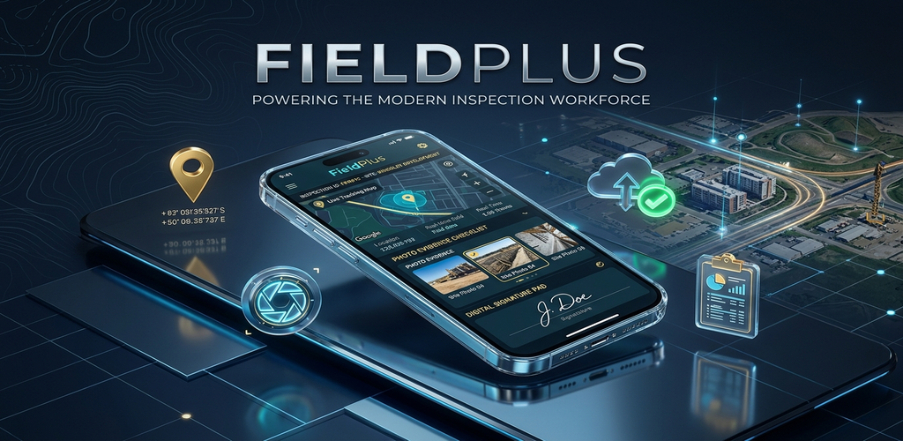
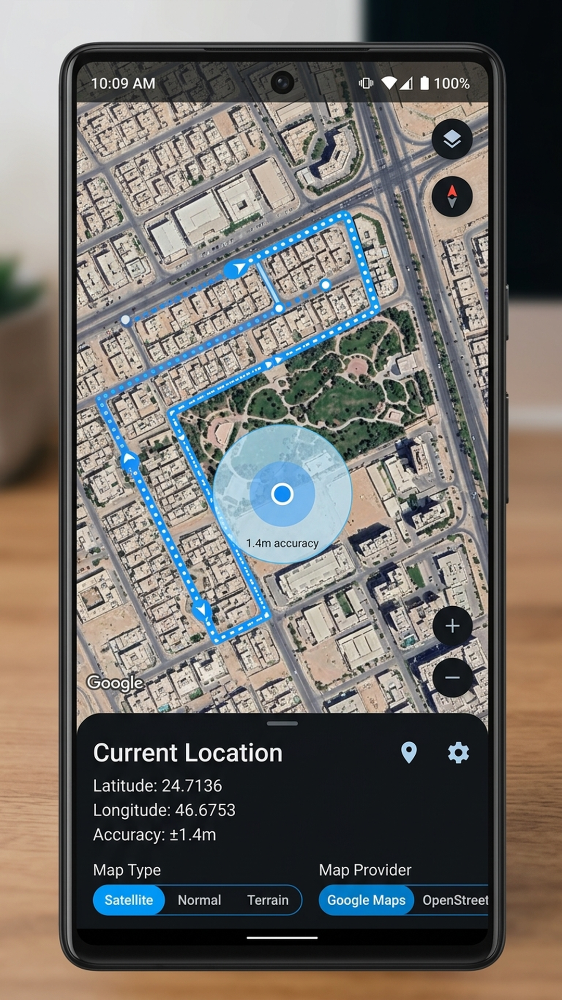
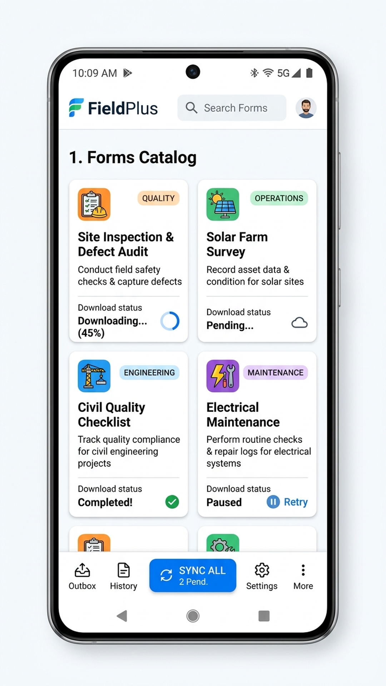
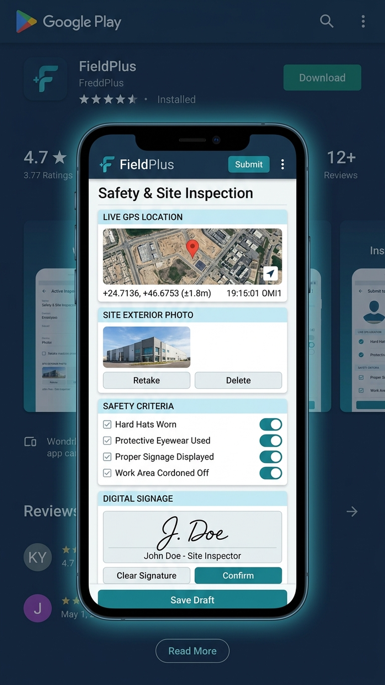
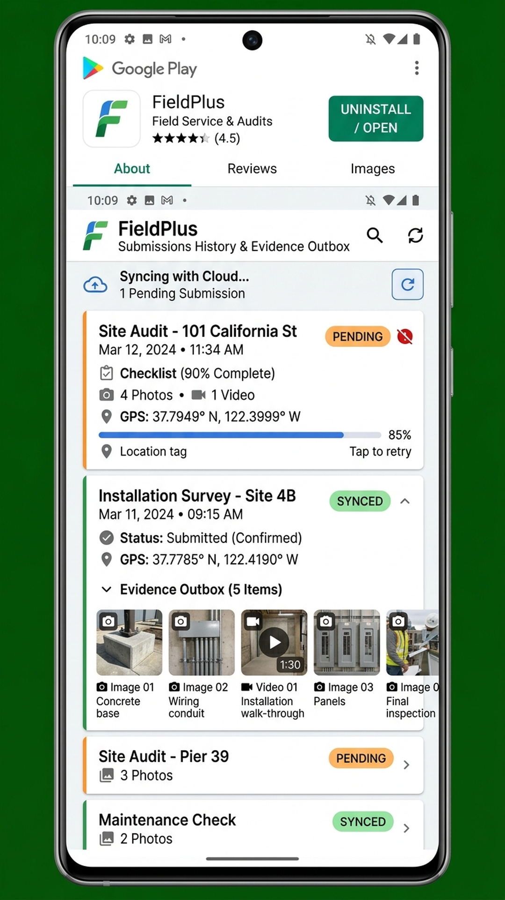

Empower site inspectors, utility engineers, and research teams to capture dynamic inspection forms, continuous GPS tracks, vector digital signatures, voice notes, and instant branded A4 PDF reports—even in zero-connectivity environments.

Engineered for mission-critical fieldwork
Room SQLite persistence engine caches templates, drafts, and evidence media locally. Outbox synchronization queues uploads until reliable connectivity returns.
Dual-provider hardware GNSS capture, 1-minute milestone clustering, real-time travel bearings, speed metrics, and instant GPX, KML, and GeoJSON route exports.
Drag-and-drop web designer with interactive live phone emulator. Supports 14+ control types: barcodes, voice notes, video, digital signatures, and math logic.
Generates multi-page branded A4 certificates with high-resolution photo evidence, map snapshots, supervisor signoffs, and instant Android Sharesheet dispatch.
Unlike basic map tools that either drop a single pin or overload the screen with hundreds of overlapping markers, FieldPlus records high-frequency fixes while rendering clean 1-minute milestones on the map with rotated travel-heading arrows.

Built with Google Material Design 3
Targeting Android 16 (API 36) with edge-to-edge system insets and smooth responsive layouts.

Multi-category survey catalog with real-time sync indicators.

Material 3 controls, real-time input validation, and media pickers.

Draft state manager, attachments gallery, and background upload queue.
Interactive Leaflet satellite route, timeline log, and GIS exports.
Robust, Modern & Extensible
Kotlin 2.0+ • Material 3 • Android SDK 24..36
PHP 8.2+ • MySQL 8.0+ • Leaflet.js • Bootstrap 5